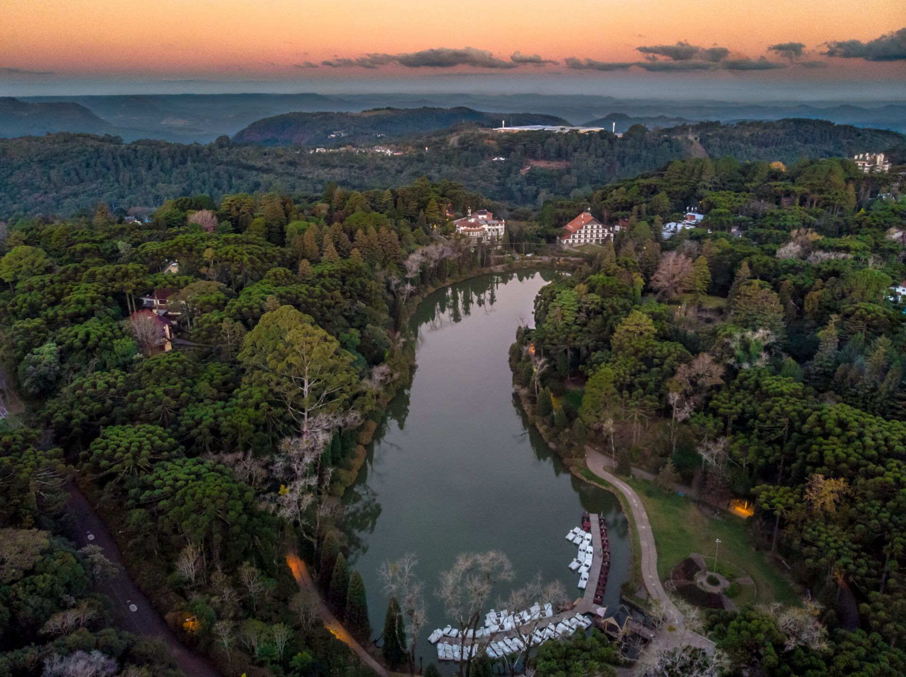
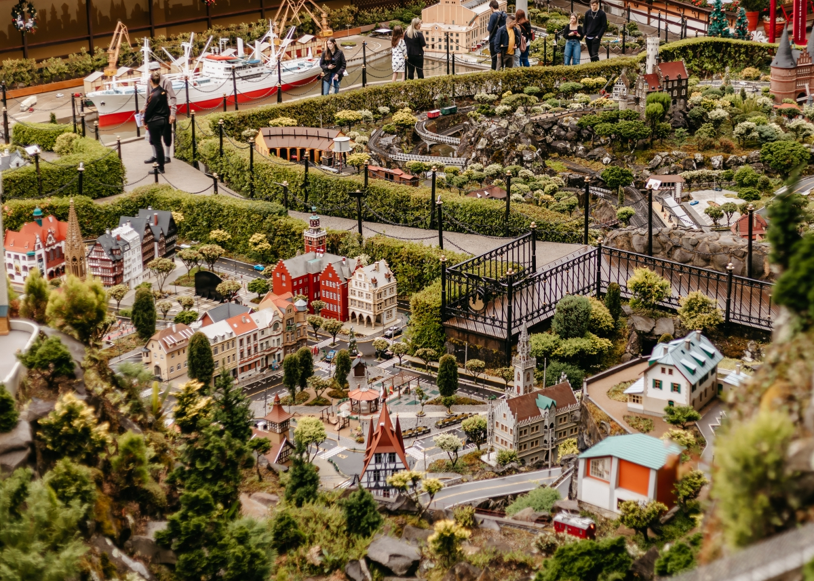
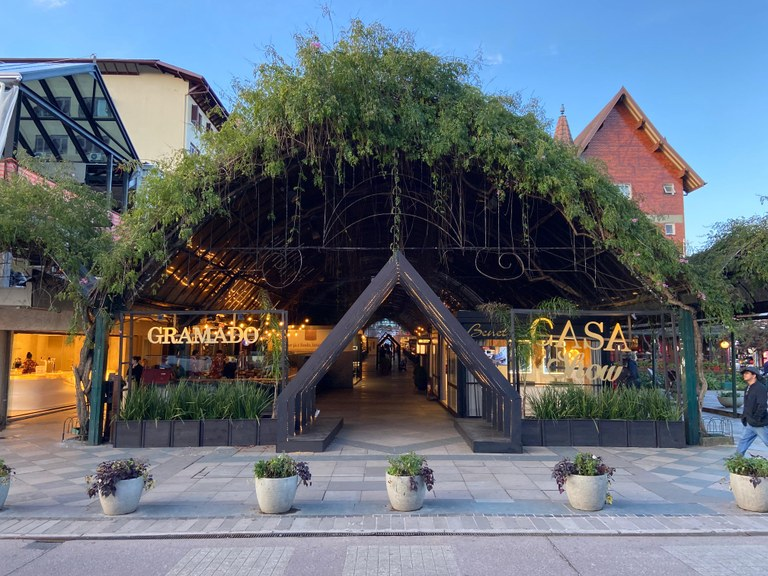

História de Gramado
A gênese do município de Gramado remonta ao século XIX, período em que a região do planalto integrava a rota de condutores de gado. O hábito desses tropeiros de repousarem seus rebanhos em uma área de pastagem densa e verdejante fundamentou a toponímia local. O processo de colonização efetiva iniciou-se por volta de 1875, capitaneado por imigrantes portugueses e, subsequentemente, por alemães e italianos, cujo núcleo inicial estabeleceu-se na localidade de Linha Nova. O desenvolvimento socioeconômico e a expansão urbana foram significativamente impulsionados em 1913, quando a sede administrativa foi transferida para o atual perímetro central, motivada pela iminente chegada da malha ferroviária. Originalmente vinculada ao território de Taquara, a localidade obteve sua emancipação política e administrativa em 15 de dezembro de 1954, sob a égide da Lei Estadual nº 2.522. Nas décadas seguintes, o legado sociocultural dos pioneiros europeus consolidou-se na arquitetura característica, na gastronomia identitária — com destaque para a produção de chocolates artesanais — e no padrão de hospitalidade, atributos que renderam ao município a alcunha de "Suíça Brasileira". Essa vocação econômica consolidou-se em definitivo por meio do turismo de grandes proporções, impulsionado por eventos de relevância internacional, tais como o Natal Luz e o Festival de Cinema de Gramado.
Atrações Turísticas
- Lago Negro
- Mini Mundo
- Rua Coberta


